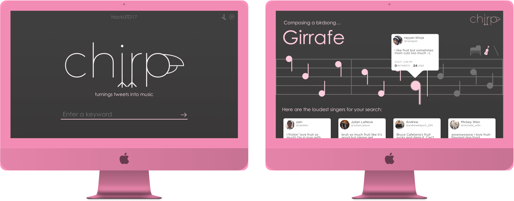

Overview
A web application that analyzes tweet language to create musical notes on various instruments.
Roles
User Interface Designer
User Experience Designer
Timeline
March 2017 to April 2017
High schoolers have some of the most innovative and creative minds in the world - all the more reason that the field of academia should be doing more to attract these students to research as a profession. Unfortunately, research shows that students either 1) are afraid they are not smart enough or more commonly, 2) are disinterested in the topic of research.
While research is an impressive and rewarding extracurricular for students, it’s commonly seen as too complex or unapproachable for those not yet in a university. On another note, social media proves to be the most attractive medium for teenage entertainment. Second? Music. Combining these two attractions results in a unique product that has interesting effects on teenage audiences.
We wanted to find a way to analyze social trends and introduce the concept of using independent variables to visualize different results. Chirp, while mostly a fun application, attempted to accomplish these goals. Users can type in a keyword to learn about the popular opinions on that topic on Twitter.  The results of each search played music based on the sentiment analysis of each tweet. Negative scores resulted in lower notes while positive scores translated to high notes. Furthermore, users could see the tweets that swung the melody the most. For fun, we added a few more instruments that, when switched quickly, could create multi-instrument symphonies!
As an undergraduate researcher studying the effects of social media and technology usability at the University of North Texas, I created Chirp as a solution to generalizing the internet’s opinion as well as displaying this data in a media form that is familiar to the teenage demographic. The main purpose was to engage teenagers with research concepts of data collection and influence while also creating a piece of art. For this work, Chirp was selected as one of 10 finalists for the University of North Texas Sherman/Barsanti Inspiration Award.